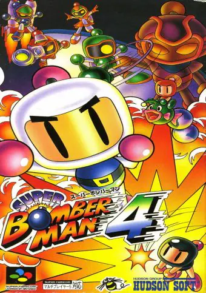

Detalhes:
"Super Bomberman 4" é um jogo de ação e quebra-cabeça onde o jogador controla Bomberman, um herói conhecido por usar bombas para derrotar inimigos e abrir caminho por labirintos. O enredo não é tão profundo quanto outros jogos de aventura, focando principalmente na jogabilidade e na mecânica de quebra-cabeças.